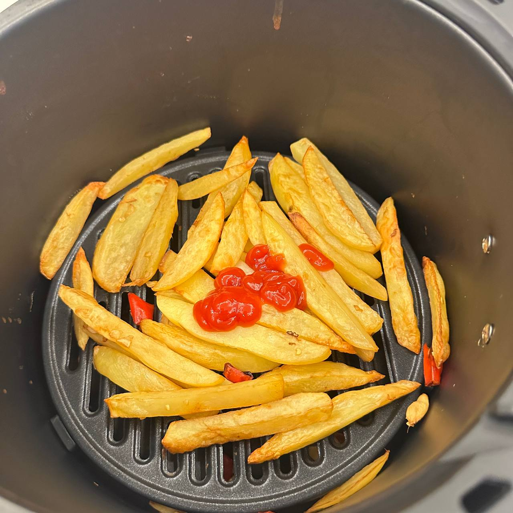

空気フライヤーで料理 | オリジナル、AI翻訳
最近、エアフライヤーが私のお気に入りの調理器具になりました。MideaのエアフライヤーKZE5004を約126元で購入しました。
以下に作った料理を載せますが、とても楽しい経験でした。
ここで最後に紹介した料理はエアフライヤーで調理したものではありません—単に鍋で作った麺です。最近作った料理の一つなので、ここに含めておきます。
調理器具を買ってから頻繁に使うなら、本当に気に入っていると言えるでしょう。
エアフライヤーは私の電気オーブンの代わりになりました。実際には両方使いたいのですが、妻が許してくれません—すでに多くの調理器具や食器でいっぱいのダイニングルームとキッチンがさらに雑然とするからと文句を言います。
妻は週末に訪れるので、これは当然のことです。一人で永住するなら、電気オーブンをダイニングルームに戻すでしょう。
両方の器具を保持するメリットもあります。まず、特に複数の料理を作る際に電気オーブンとエアフライヤーを同時に使えます。次に、同じ食材を両方で調理したときの味の微妙な違いを比較できます。第三に、良い製品を使わずに放置するのは無駄です。
同じ器具ばかり使っていると飽きるので、伝統的なコンロ調理を試し、鍋で麺を作りました。2020年と2021年には、実家で似たような料理を作り、時々その短い動画を撮ったことを覚えています。
当時は、料理は簡単に思えました。しかし今では、あまり料理をしないので、エアフライヤーを使うことさえ面倒に感じ、忙しいときはデリバリーを注文したくなります。その結果、最近はフライパンや鍋をあまり使っていません—だから今日使えて嬉しかったです。
もともとエアフライヤーで調理するために牛肉のボールを買いましたが、今では鍋でも試したいです。
麺は美味しくできました。具材を茹でるためにたくさんの水を使い、余分な水をすくい取り、その後味付けパウダーを鍋に加えました。完成品は素晴らしかったです！

出典: 自主撮影

出典: 自主撮影

出典: 自主撮影

出典: 自主撮影

出典: 自主撮影

出典: 自主撮影

出典: 自主撮影
料理
2024.12.29
-
自分で料理するのは簡単です。炒め物には油を使います。油は水よりも沸点が高いため、食材をより効率的に加熱できます。
-
肉、野菜、唐辛子、ニンニク、生姜を使った料理は簡単に作れます。
-
野菜カッターはとても便利な道具です。野菜を立方体、薄切り、細切りにしたり、ジャガイモのスライスやピーマンの細かい粒を作るなどの作業に使えます。
-
電気炊飯器でスープを作るのは簡単です。材料を入れて塩で味を調え、タイマーをセットして煮込むだけです。
-
山芋のスープは素晴らしいです。スープで簡単に調理でき、スープをとろみ付けます。ニンジン、大根、トマトもこのスープに良い食材です。
-
グリルオーブンは、エッグタルト、羊肉、牛肉、豚肉、ホットドッグ、キノコなどを作るのに使えます。肉の場合、温度を200°Cに設定し、約20分調理します。
-
アウトドア料理には火が必要です。乾いた葉を使って火を起こせます。料理用の容器を見つけるか、瓦を代用の鍋として使うこともできます。
-
炊飯器はご飯だけでなく、食べ物を温めるのにも使えます。ただし、野菜は水を出す傾向があるため、ご飯がべちゃべちゃになることがあります。野菜を炊飯器で調理する場合は、少量の水だけを加えてください。
-
料理ロボットは料理を作るのに便利な道具です。材料を入れて、ロボットにかき混ぜてもらうだけです。
-
各食材がどれくらい炒める必要があるかを理解する必要があります。ブロッコリーはより多くの時間を必要としますが、キノコや肉はより短い時間で済みます。
-
一緒に調理すると、調理時間の違いにより、一部の食材は調理しすぎになり、他の食材は調理不足になります。フライパンに材料を入れる順番が大事です。
-
料理の間に鍋を洗う回数を最小限に抑え、一部の食材は一緒に炒めることができます。
-
同じプロセスや機能を、同じ特性を持つ類似のオブジェクトやアイテムに適用できます。これは料理にもプログラミングにも当てはまります。
-
グリルオーブンで加熱する食材には、コーンスターチと薄口醤油をまぶせます。レモン、オレンジ、リンゴジュースなど、果汁でマリネするのも良いです。
-
肉や他の食材を小さく切ることで、鍋でより効果的に加熱できます。そのため、スープ作りの準備とは異なります。スープは大きな材料でも構いません。
-
料理で最も重要なのは、食べられるように完全に調理することです。
-
電気蒸し器の代わりにグリルオーブンを使うと、水を使わずに加熱するため、食品が乾燥します。
-
すり鉢とすりこぎはニンニクを潰すのに最適な道具です。
-
特に材料がすでに醤油で味付けされている場合は、塩を使いすぎないでください。
-
肉は通常、再度洗う必要はありません。人は食材を洗いすぎる傾向があります。水で徹底的に洗う必要はありません。食材が新鮮であることを確認するだけで十分です。
-
クッキングシートはアルミホイルよりも優れています。調理面に張り付かないからです。
-
ピーマンなど、水分を多く含む食材には注意してください。肉と一緒に炒めると水分が出て、炒め温度が下がり、調理が遅くなります。
 出典: 自主撮影
出典: 自主撮影
 出典: 自主撮影
出典: 自主撮影